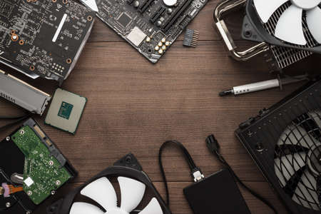

Randapparatuur
Randapparatuur is in de context van computers hardware die niet behoort tot de centrale rekeneenheid maar 'ernaast' gebruikt wordt om de computer geschikt te maken voor een bepaalde taak.
Verbindingen: kabels/interfaces
Interfacekabels verbinden twee (of meer) elektrische apparaten met elkaar. Denk aan een interface kabel voor computer en bijvoorbeeld printer of tv / extern beeldscherm. Of aan USB-kabels voor verbindingen met camera of smartphone. Maar dit type kabel is er ook voor het verbinden van verschillende netwerken met elkaar.
Logische laag
De afspraken over de manier waarop data getransporteerd moeten worden en hoe apparaten binnen een netwerk te vinden zijn.
Toepassingslaag
Bij toepassingsvragen moet je (kennis en inzicht met betrekking tot) de leerstof in een bekende situatie gebruiken om een probleem op te lossen.
Toepassingsprogramma's
Die geeft opdrachten aan het besturingssysteem om met de hardware te interageren.
Operating system
Een besturingssysteem is een programma dat na het opstarten van een computer in het geheugen geladen wordt en de hardware aanstuurt. Het fungeert als medium tussen de hardware en de computergebruiker, met als opzet dat de gebruiker programma's op een gemakkelijke en efficiënte manier kan uitvoeren.
Taken van het besturingssysteem
Het besturingssysteem zorgt onder meer voor het starten en beëindigen van andere programma's, het regelt de toegang tot de harde schijf met het bestandssysteem, het beeldscherm, de invoer van gegevens en de communicatie met de randapparatuur. De andere programma's die gestart kunnen worden, heten applicaties.
Talen/compilers
Dit is een computerprogramma dat een in een brontaal geschreven programma vertaalt in een semantisch equivalent programma in een doeltaal.
Databases
Een database is een georganiseerde verzameling gestructureerde informatie of data, die doorgaans elektronisch wordt opgeslagen in een computersysteem.